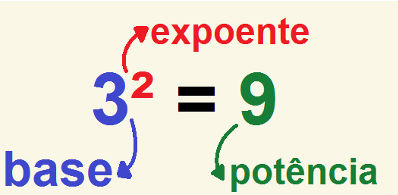
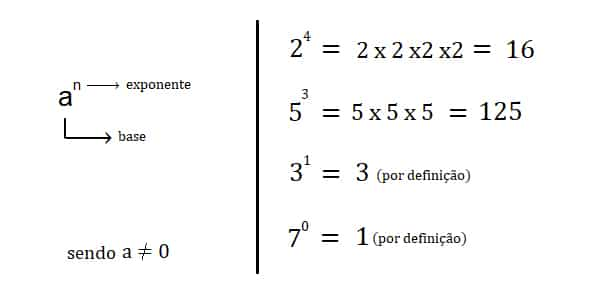
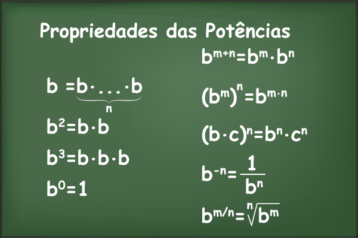

A potenciação é uma operação que surge a partir da multiplicação de fatores iguais como uma alternativa para simplificar a notação.
A potenciação é uma simplificação da forma de expor uma multiplicação de fatores iguais. Antes de detalhar a potenciação, vamos nos lembrar da adição. Nas séries iniciais, aprendemos a somar e logo vemos que existem formas de melhor expressar somas, como:
No item a, se somarmos o número 2 com ele mesmo 7 vezes, obteremos o resultado 14. Mas esse resultado poderia ter sido obtido mais rapidamente através do cálculo 2 x 7 = 14. No item b, a soma do número 3 cinco vezes pode ser substituída pela multiplicação de 3 x 5, pois em ambas obtemos o resultado 15. No item c, a soma do número 4 dez vezes pode ser representada pela multiplicação de 4 x 10, que é igual a 40.
|
Assim como acontece com as demais operações, os termos de uma potência recebem nomes específicos: |
 |
Nas imagens a baixo temos um exemplo de como resolver essas operações
 
52 lê-se 5 elevado à segunda potência ou 5 ao quadrado: 5 x 5 = 25 Logo, A expressão 52 equivale a 25. 33 lê-se 3 elevado à terceira potência ou 3 ao cubo, donde: 3 x 3 x 3 = 27 Logo, A expressão 33 equivale a 27.
Agora veja alguns exemplos de como podemos ler as potências
24 = “dois elevado a quatro” ou “dois elevado à quarta potência”
25 = “dois elevado a cinco” ou “dois elevado à quinta potência”
26 = “dois elevado a seis” ou “dois elevado à sexta potência”
27 = “dois elevado a sete” ou “dois elevado à sétima potência”
28 = “dois elevado a oito” ou “dois elevado à oitava potência”
29 = “dois elevado a nove” ou “dois elevado à nona potência”
2n = “dois elevado a n” ou “dois elevado à enésima potência”
Assista a vídeo aula a seguir para entender como resolver potenciações
Agora é sua vez! Tente resolver os exercicíos a seguir
1.
a) 25
b) 1
c) 81/49.
2. b) 390 625.
3. d) 1728
Escreva aqui